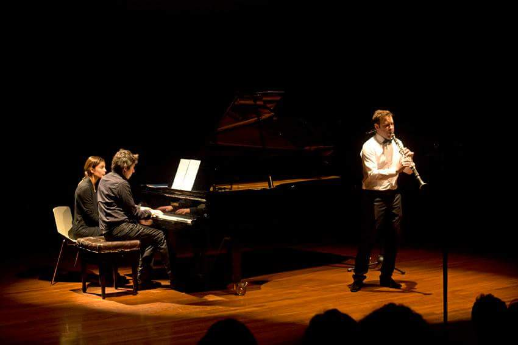

Thanks for visiting my webpage. There is not much here, so I'm sharing some things I have been doing. Feel free to drop me an email.
Full CV on demand.
Cryptography
Ph.D. Université Paris-Saclay
My Ph.D. advisor was Professor Louis Goubin. After positions at Instituto Milenio Fundamentos de los Datos and ProtonMail, I currently work at Fortanix.
- A peek inside post-quantum keys
- PGP with secrets in the cloud ,
- OpenPGP Email Forwarding via Diverted Elliptic Curve Diffie-Hellman Key Exchanges
- CKKS, a homomorphic encryption scheme for approximate arithmetic
- Proton is secure against batch GCD attacks
- Cryptocurrency Mining Games with Economic Discount and Decreasing Rewards
- C++ Implementation of Bernstein's Batch GCD algorithm
- Excalibur Key-Generation Protocols For DAG Hierarchic Decryption ,
- C++ Implementation of the BGV homomorphic encryption scheme ,
- Rust-Ring-Learning With Errors
- Arithmetic in negacyclic rings
- Blending FHE-NTRU keys – The Excalibur Property:
- ASCrypto LatinCrypt 19 - Introductory talk about Homomorphic Encryption:
- The Gelfand Problem In Tubular Domains
- The E8 lattice (student work, based on Serre's cours d'arithméthique, french)
- Some solutions to problems in the problems section of mathematics magazines:
- AMM 11458 - Cauchy-Schwarz
- MM 1845 - Fractional Integral and Euler-Mascheroni constant
- AMM 11456 - cosh(π)
- CMJ907 - Pell-Lucas Numbers
- MM1827 - Integer matrix with permutations
- MM 1828 - sqrt(π)
- CMJ906 - A product
- PME1210 - Ellipsoid and AM-GM
- AMM 11376 - Converging Series
- AMM 11396 - Determinants and Recurrence Relations
- AMM 11459 - Double sum, double product
- MM 1217 - Fractional Integral
- MM1786 - Floor Function Sum
Music
Conservatoire de Versailles
I am lucky to have been trained by
Francisco Gouët
(Orquesta Sinfónica de Chile),
Philippe Cuper (Opéra de Paris),
and the great Luis Rossi. Recordings on demand:
{kind=link}
- Mozart - Clarinet Quintet, first movement (with Amadeus ensemble)
- Francis Poulenc - Clarinet sonata, Allegro con Fuoco (Armelle Mathis, piano)
- Edison Denisov - Clarinet sonata (Paris, 2017)
- Carl Nielsen - Clarinet concerto Op. 57
- Francis Poulenc - Clarinet sonata, Romanza (Armelle Mathis, piano)
- Igor Stravinsky - Three pieces for clarinet solo
- Aron Copland - Clarinet concerto, Orchestre Tour-à-Tour, Paris 2017)
- Jean-Baptiste Robin - Labyrinthe Circulaire for 9 clarinets
- Guillaume Connesson - Disco Toccata (with Pablo Schinke, cello)
Email Contact
francisco -the thing- vialprado.com
Other
GitHub: zugzwangThe pianist in the picture is my friend Camilo Gouët.